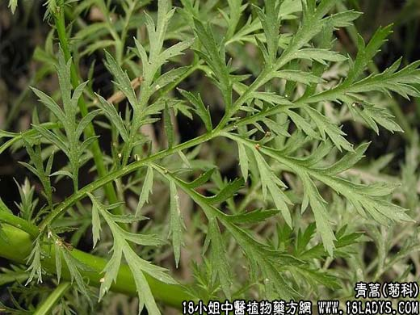

【中药概述】
青蒿为菊科草本植物黄花蒿的地上部分。苦、辛，寒。归肝、胆、肾经。
1．凉血退蒸：用于阴虚内热所致的骨蒸潮热，常与鳖甲，丹皮，生地同用；或持续低热不退等证，常与秦艽，鳖甲，知母同用，如（<温病条辨>青蒿鳖甲汤）。
2．温热：用于温热病后期，热邪伏于阴分，夜热早凉，热退无汗等。如（<证治准绳>清骨散）。
3．暑热：用于暑热外感，发热无汗，有清解暑热之效，常与绿豆，西瓜翠衣，荷叶等同用。
4．截疟：用于疟疾寒热，清胆的双重作用，如（<通俗伤寒论>蒿芩清胆汤)。
【药效鉴别】
青蒿与地骨皮功能相近，同用治阴虚发热能增强疗效。青蒿还善泄气分实热、阴分邪热及暑热。
【药理作用】
1.浸剂对致病皮肤真菌有抑制作用；
2.对钩端螺旋体有抑制作用。
【化学成分】
含青蒿酮、异蒿酮、左旋樟脑、侧柏酮、桉油素、丁香烯及其他倍半萜衍生物等。
【用量用法】
3～10g，水煎服。鲜品单用20～60g，绞汁服。不宜久煎。
【使用注意】
虚寒泄泻、多汗者慎用。
【附】
青蒿子（为菊科草本植物黄花蒿或黄花蒿带有花或果实的头状花序）。甘，苦，寒。归肾、肝经。清虚热，治痢疾，杀虫：用于劳热骨蒸，低热不退，痢疾，恶疮，疥癣，风疹等。3～10g，水煎服，或入丸、散剂。